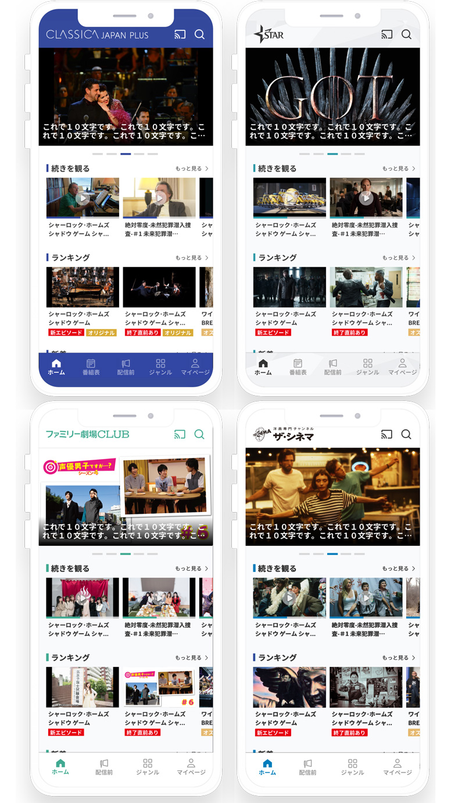
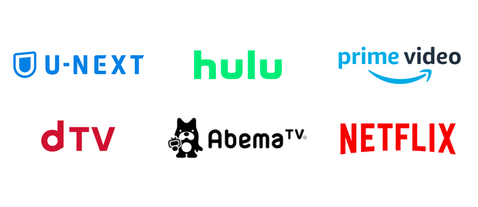
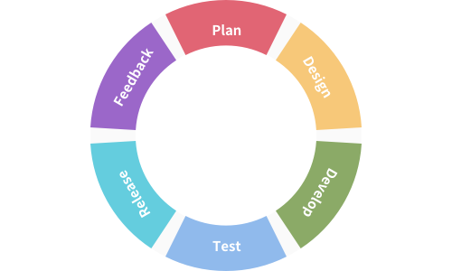
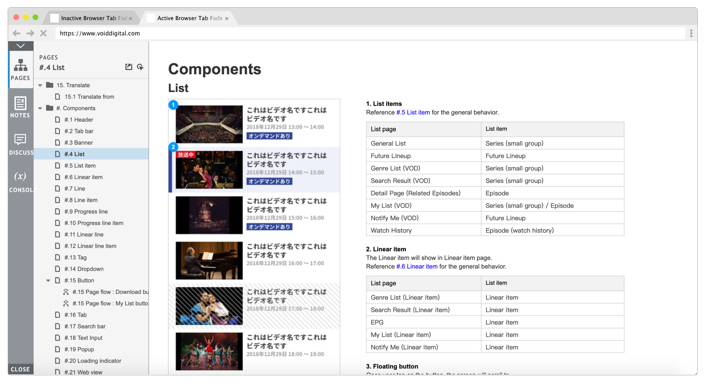
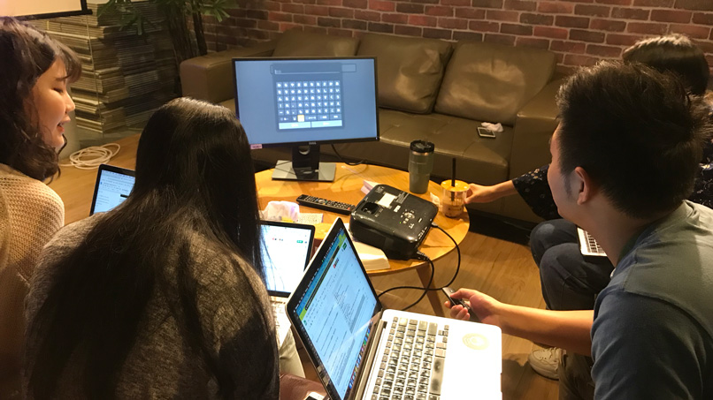
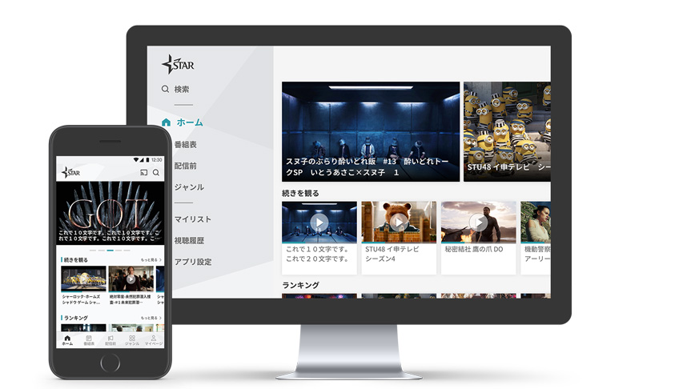

Japanese OTT Apps
A Japanese channel agent wanted to redesign their current streaming apps. The project met the difficulties that we have to redesign 4 apps with different features within 3 months. The design should not only take care of the streaming service but also focus on the branding of 4 channel content providers. Besides, the apps need to be developed with smoothly video-watching experience across different devices including mobile and Amazon FireTV.
I was the design project lead of this project and took the responsibility of the end-to-end design : start from secondary research to the final bug bash testing. I led a 3-designer team and applied design strategies into the negotiation between our company and the client. As a project lead, I aimed on making a balance between the best quality delivery and the tight schedule.
— Design Project Lead, UX Designer
- Secondary Research
- Design Strategy
- User Journey
- Wireframing
- Hi-fi Prototype
- UX Spec / Components
- Bug Bash Testing
Approach

Step 1. Understanding Japanese Market and Current Situation
The target audience of this app is based in Japan. It’s a challenge for us to make the design for our un-familiar end users. Hence, the team start to do the secondary research. We compare our current apps with other 5 different competitors and bring out some interesting findings that are peculiar to the Japanese customer. Besides, we also analysis the current apps to bring out the current information architecture.

Step 2. Design Strategy and Being Agile
Due to the time limitation, we only have very limited research schedule. Hence, we agilely adjust our project plan into : Provide the design proposal that meets the expectation of our stakeholders first. After the testing stage, we can put emphasis on the end user’s truly feedback and then point out the unfriendly interactions for our redesign within phase 2.

Step 3. User Main Flow Definition and Wireframing
After the changing of our design project goal, the team start working on design stuff. As a UX Designer, I define 6 user main journeys and then bring out the page flow. After that, within the wireframing stage, I combine the solutions that fit the findings from our secondary study into our design. We also make the hi-fi prototype so that project manager is able to explain the user scenario to our client.

Step 4. UX Spec and Component Building
It’s very important for the project to make different teams on the same page. The design team should be the bridge between engineers, project manager and client to deliver the right information. At this step, UX Spec takes the role of making a clear definition of the main functions by page, interaction rules and the development logic. With the UX Spec, the teams can have the consensus toward the apps. Besides, because there are several duplicated functions within the 4 apps, we also make the UX Spec refer back to engineer’s component library. So that the engineers can efficiently get the reusable code even when they are building different apps.

Step 5. Bug Bash Testing
When the project team almost complete the app development, we have to check every details before the launch. I took the responsibility of hosting two bug bash testings. I work closely with our quality assurance team and make the test case based on our 6 main user flow. We totally recruit 24 participants to provide the feedback of these 4 apps cross 3 platform (Android/ iOS/ FireTV). After the testing, we prioritize the feedbacks to correctly put resource on fixing the bug and summarize the users’ true opinion as the evidence of our redesign within phase 2.
Result
4
Apps
6
Main User Journeys
2
Bug Bash Testings

The 4 apps will go online on Dec. 2019 and approach around 10 thousand users. With the 4 apps as the pioneer, we are confident about the estimation of schedule and quality of our phase 2 redesign. In phase 2, there will have one more app that has millions users adding in our redesign scope that is what I am excited about.